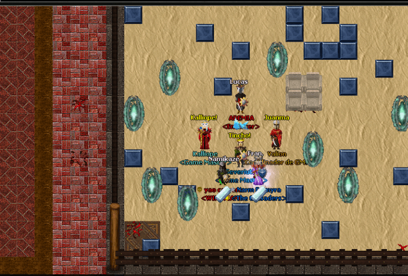
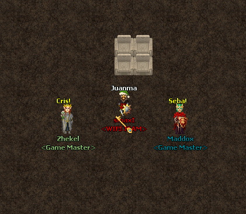

Nivel
- Khyn - 100
- Nami - 100
- Lenan - 100
- Ryzen - 98
- Kelthuzad - 93

Desafios
- ChachaJrs: 15
- Rozhiel: 14
- I I: 10
- Redondo: 8
- Galy: 8

Torneos
- Ademia: 3
- Pro player: 2
- Pacho Herrera: 1
- Temor: 1
- Azarev: 1
Puntos competitivos (MMR)
- ChachaJrs: 2131pts
- Gon: 1059pts
- Herios: 778pts
- Sartex: 706pts
- Bolters: 692pts